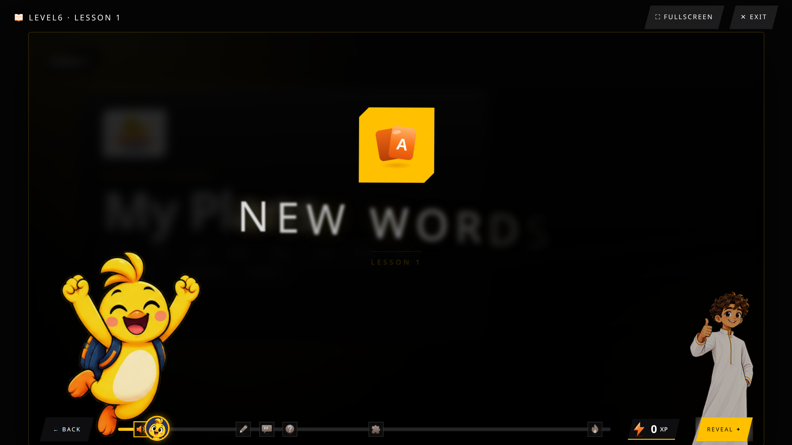

The final level of the journey: the future tense, predictions, comparisons, and real debate. Your child finishes here able to plan, predict, compare, and argue a point of view in English.
By the end of this level, your child can:
- Talk about future plans and predictions ("will", "going to")
- Describe what was happening while something else occurred
- Talk about rules, duties, and obligations
- Make comparisons ("even better", "which is better?")
- Discuss multitasking and daily habits
- Join a class debate and defend an opinion
- Compare cultures and traditions
Sample vocabulary
predictيتنبأdutyواجبprepareيستعد
Grammar
Future forms, past continuous, modals of obligation, and comparatives -- one grammar point per lesson with its own Grammar Hub rule page, capping off the full 7-level grammar progression.

A real vocabulary slide from Lesson 1 — picture, Arabic, example sentence and audio